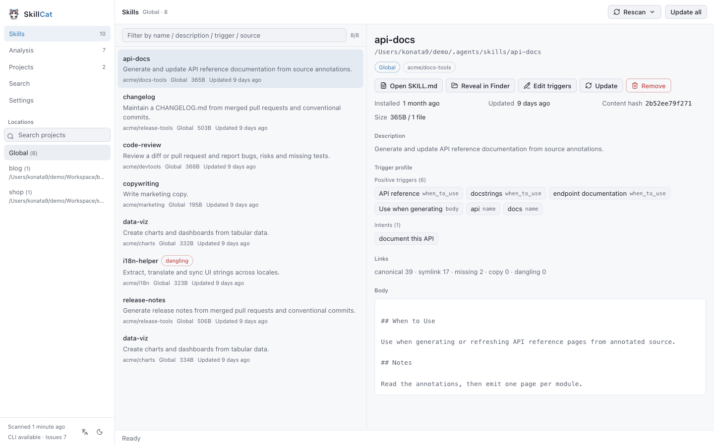
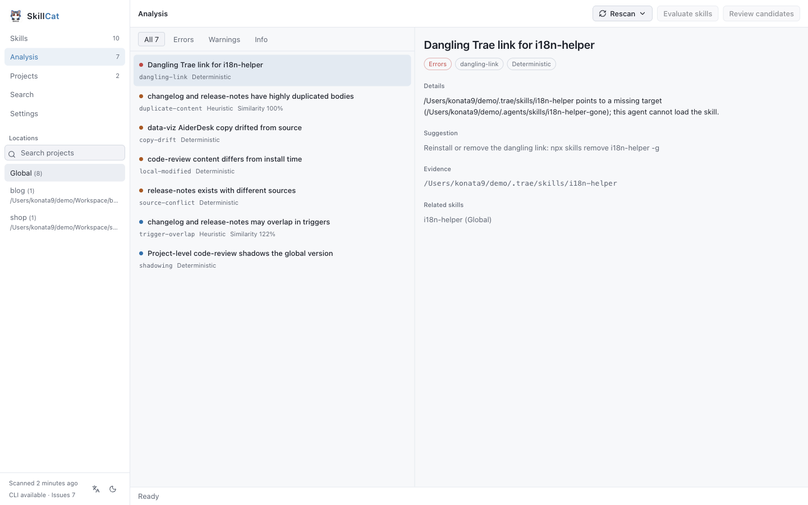
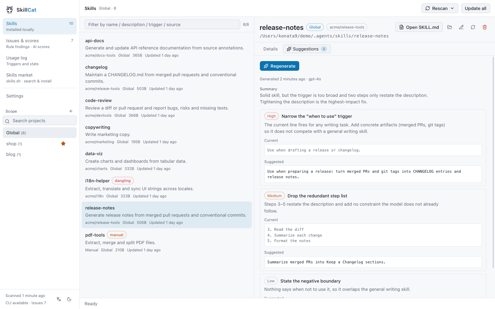
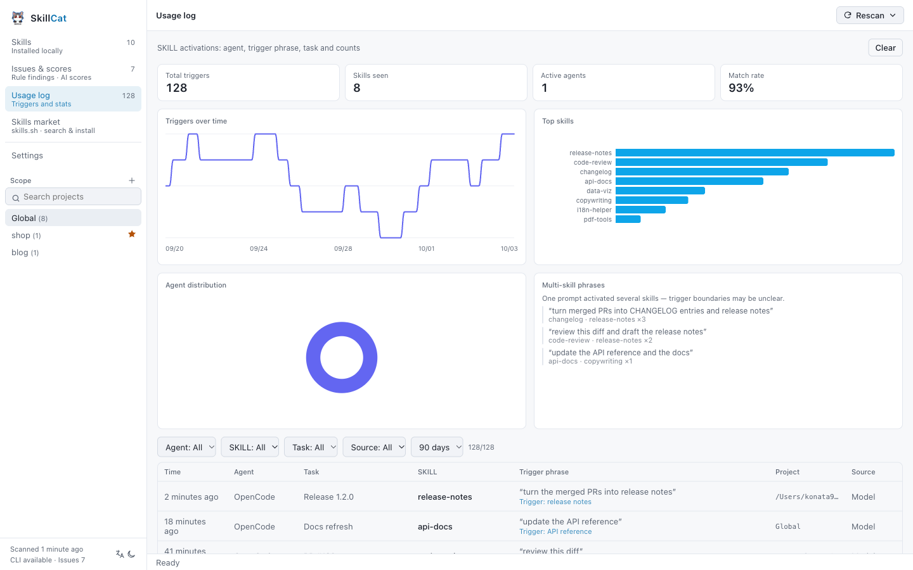
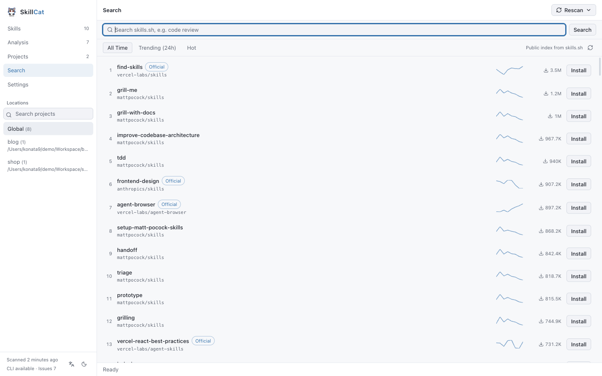

InventoryAcross 90+ known agents
Scans global, per-project and custom directories, then reports the source, the lock metadata and the real link state of every skill: symlinked, dangling, or a drifted copy.
coreLocal-first agent skill manager
Inventory every agent skill, find what's wrong, and manage it safely. SkillCat reads what you have installed across 90+ agents, shows the evidence behind every finding, and turns your own model into read-only optimization suggestions — fixes you can judge, never edits it makes on its own.
---
name: release-notes
description: Generate release notes from merged PRs
when_to_use: drafting a release, changelog
---
## When to Use
Use when drafting a release, or turning
merged pull requests into user-facing notes.Works across 90+ known agent directories
01 · Skill management
SkillCat reads the global, per-project and custom directories across 90+ agents, then shows the source, the lock metadata and the real link state of every skill — symlinked, dangling or drifted.
Global, per-project and custom directories in one list, each with its source, size, update time and content hash.
Symlink, dangling link, copy drift or a local edit — the disk fact, not a guess, for every installed skill.
Deterministic rules flag dangling links, missing lock records, copy drift, cross-scope shadowing and source conflicts, each with the evidence that triggered it.
Finds projects under your scan roots by their agent markers. Pin the ones you revisit; the registry stores paths only.
Install, update or remove runs through the official skills CLI, streamed into a drawer with a confirmation step you can cancel.


Skills · real link state · Issues & scores · evidence per finding
02 · Skill optimization
Turn your own model into a reviewer for one skill at a time. It returns a summary plus severity-ranked suggestions with before/after excerpts, grounded in a bundled rubric — and writes nothing back.
Every suggestion carries a title, a severity (high, medium or low), a rationale and optional before/after excerpts, so you judge the fix instead of trusting it.
Review criteria come from the built-in skill-optimizer skill. A same-named user skill is ignored, so a prompt injection in your skills cannot hijack the review.
Results persist to optimizer.json, keyed to the skill and its content hash. Re-opening a review is free; only an explicit regenerate spends tokens again.

Suggestions tab · one skill at a time
03 · Trigger statistics
SkillCat extracts each skill's trigger profile, and can record which skills really fire inside your agent — with the trigger phrase, the task and the time. The stats stay on your machine.
Extracts triggers from when_to_use, dispatch_intent, the description and “When to Use” sections. Annotate by hand in a sidecar; skill files are never rewritten.
Install the OpenCode bridge to log real triggers: which skill, which phrase, which task, which session. Off by default, and a one-click uninstall.
Charts show triggers per day and the skills that fire most. A single sentence that fires several skills is aggregated as a conflict signal.
Trigger phrases are prompt fragments. They are stored only in your local config directory, never uploaded, with a retention window you control and a one-click clear.

Usage log · triggers and stats
04 · Discovery
Browse the public leaderboard or search the index, read the SKILL.md before you commit, then install straight into the current scope.
All-time, trending and hot rankings, each with a weekly install sparkline.
Keyword search with a text fallback, so a result is always available.
Inspect the SKILL.md and the file list inside the app first.

Skills market · search & install
Every capability is labelled by how it knows what it knows. Disk facts are deterministic. Similarity results are heuristic and say so.
Scans global, per-project and custom directories, then reports the source, the lock metadata and the real link state of every skill: symlinked, dangling, or a drifted copy.
coreFinds projects under your scan roots by their agent markers. Pin the ones you revisit. The registry stores paths only, and removing an entry never deletes a file.
coreDeterministic rules read disk facts: dangling links, missing lock records, copy drift, local edits, cross-scope shadowing and source conflicts. Heuristics surface trigger overlap, negative contradictions and body duplication, each with a confidence score and the shared terms that caused it.
rulesEvery change streams progress into a drawer with a confirmation step and can be cancelled. Writes are delegated to the official skills CLI, so there is one install path, not two.
cliAsk your model to review a single skill and return read-only rewrite suggestions with before/after excerpts, grounded in a bundled reviewer skill. Nothing is written back; results are saved and kept until you regenerate them.
aiExtracts what dispatches each skill from when_to_use, dispatch_intent, descriptions and “When to Use” sections. Annotate triggers by hand in a sidecar; skill files are never rewritten.
coreInstall the OpenCode bridge to record which skills actually fire, with the trigger phrase, task and per-day and per-skill charts. Reversible in one click, and stored only in your local config directory.
optionalBrowse the public index and the all-time, trending and hot leaderboards, read a SKILL.md before you commit, then install straight into the current scope.
onlineScore every skill with your own model, then judge the pre-filtered duplicate and conflict candidates. Results are saved with a signature, so the UI can tell you when an evaluation has gone stale.
aiThree steps, and the third one is the only one that can change anything on disk.
01
Read the global and project lock files, enumerate the canonical directory, every known agent directory and your custom directories, then hash the content of each skill.
02
Run the rule engine over every record, extract trigger profiles, compute similarity where it is cheap, and attach your saved annotations. Nothing is written back to a skill.
03
Install, update or remove — each one confirmed, streamed and cancellable, and each one executed by the official skills CLI rather than by SkillCat itself.
Reads
Scanning uses the filesystem and lock files only. No network call is required to inventory or analyze your skills.
Writes
Every mutation runs through the official skills CLI. SkillCat never becomes a second source of truth, and never edits your files behind your back.
P1
Scanning uses the filesystem and lock files only. No network call is required to inventory or analyze your skills.
P2
Every install, update and removal runs through the official skills CLI. SkillCat never becomes a second source of truth.
P3
Deterministic rules and heuristics are labelled separately, and every finding ships with the evidence that triggered it.
P4
Scoring, duplicate judgement and optimization suggestions run only when you ask, with your own key and endpoint. The optimizer is read-only — it never rewrites a skill. Nothing leaves your machine by default.
Grab the latest build from the releases page, or clone the repo and run it in development mode.
macOS
Windows
The CLI installs skills. SkillCat shows you the state of everything you have already installed: it reads what the CLI and your agents wrote to disk, explains each skill, and flags concrete problems before they bite.
No. Inventory, trigger profiling and the rule engine all run without a model. An API key is only needed for the optional AI evaluation and the read-only optimization suggestions.
Over 90 known agent directories, including Claude Code, Codex, Cursor, OpenCode, Gemini CLI, Windsurf and Trae. You can add your own skill directories as well.
Not silently. Scanning is read-only, and annotations live in a sidecar file in the config directory. Optimization suggestions are read-only too: they return before/after excerpts and never write to a skill. Any real change goes through the official skills CLI, with an explicit confirmation step.
Yes. Scanning, analysis and the usage log use only the filesystem and lock files, and the log stays local. Network access is limited to the optional remote search, leaderboard and AI evaluation.
Only if you switch on runtime activity. With the optional OpenCode bridge installed, SkillCat logs which skill fired, the trigger phrase, the task and the time — stored locally in your config directory, never uploaded, with a retention window you set and a one-click clear. Uninstall the bridge and nothing is recorded.
Yes. SkillCat is MIT-licensed and open source, with no account, no subscription and no telemetry.
macOS is self-contained: the skills CLI is bundled, so no Node.js install is required. On Windows, install Node.js 22 or newer.
Free, open source, and read-only until you say otherwise — even the optimization suggestions.